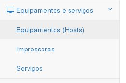
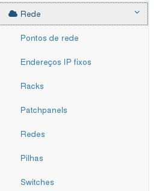

Sistema ACE - Administração de Cabeamento Estruturadao e Infraestrutura de TI¶
Sistema desenvolvido em Django para controle de pontos de rede (voz, dados, voip), ramais, telefones, switches, racks, patchpanels, equipamentos, redes, serviços e endereços IP.
O ACE permite um controle centralizado de várias informações da infraestrutura de TI de uma organização tais como:
- Listagem de todos os servidores, sejam físicos ou virtuais em uso ou não;
- Localização dos equipamentos (computadores, impressoras, switches, accesspoints, equipamentos de segurança e outros);
- Controle de bens;
- Conexões de rede de equipamentos em tomadas, patchpanels e portas de switches;
- Controle de VLANs e suas associações a redes e portas de switch;
- Controle de switches e pilhas (stacks);
- Controle de redes e endereçamentos IP;
- Controle de linhas telefônicas sejam elas analógicas, digitais ou VoIP.
Instalação¶
Caso esteja utilizando um sistema GNU-Linux será necessário instalar previamente pacotes de desenvolvimento como gcc, make e outros (o pacote build-essential no Debian e Ubuntu) além do python-dev.
Compatível com Django 1.8
Instale o ACE com o comando a seguir:
pip install django-sysace
Add «ace» and other apps to your INSTALLED_APPS setting like this:
INSTALLED_APPS = [ ... 'django.contrib.admin', ... 'ace', 'smart_selects', 'simple_history', 'django_modalview', 'dal', 'dal_select2', 'mail_templated', 'solo', 'import_export', 'massadmin', 'django_extensions', 'widget_tweaks', 'pagination',
Inclua em MIDDLEWARE_CLASSES a linha “pagination.middleware.PaginationMiddleware”:
MIDDLEWARE_CLASSES = ( ... 'pagination.middleware.PaginationMiddleware', ... )
Inclua a URLconf do ace no arquivo urls.py do projeto como mostrado a seguir:
url(r'^ace/', include('ace.urls')),
Rode o comando abaixo para criar os modelos do ace:
python manage.py migrate
Inicie o servidor e acesse pelo endereço http://127.0.0.1:8000/admin/ (vocẽ precisará do app Admin habilitado).
Acesse http://127.0.0.1:8000/ace/ para iniciar a inclusão dos componentes da infraestrutura de TI.
Seções¶
Painel¶
O painel exibe informações gerais sobre quantitativos de itens como equipamentos, impressoras, telefones e outros.

Controle de bens¶
Na seção de controle de bens são listados os números de patrimônio de equipamentos.
Equipamentos e serviços¶
Nesta seção podem ser visualizados e cadastrados Equipamentos(hosts), impressoras/scanners e serviços.
Locais e setores¶
Onde é realizado o cadastro de locais como salas, salas técnicas e outros além dos setores da organização.

Rede¶
Aqui são cadastradas as redes, endereços IP, racks, patchpanels, pontos de rede, switches e pilhas.
Telefonia¶
Onde é feito o cadastro de telefones e a vinculação entre eles e os usuários.